Projets Perso
Analyse des ventes d'un site web - R - PowerBI
Data Engineer vs Data Scientist
Reconnaissance OCR - Analyse sémantique du texte des tickets de caisse
Data pipeline - Snowflake - Apache
Tableaux de bord - Data Viz
Web Scraping - API
Analyse des données de
ventes d'un site web
modèles de prévision
Sujet
Je reviens vers vous concernant votre candidature au poste de stagiaire data
scientist au sein de notre entreprise ~~SublimeSkinz~~. Nous vous proposons de passer
à l'étape suivante de notre processus de recrutement au travers un test technique
que vous devez réaliser chez vous avant le dimanche 8 avril.
Le délai normal est
d'une semaine.
Cet exercice a pour objectif d'évaluer vos compétences en data science. Vous serez
évalués selon 4 axes :
● Statistiques Descriptives
● Machine Learning
● Interprétation et restitution des résultats
● Qualité et clarté du code
Vous trouverez dans ce jeu de données les informations concernant la vente de
rollers heure par heure sur une période donnée.
Voici les variables disponibles :
datetime : date et heure du relevé
season : 1 = printemps , 2 = été, 3 = automne, 4 = hiver
holiday : indique si le jour est un jour de vacances scolaires
workingday : indique si le jour est travaillé (ni weekend ni vacances)
weather : 1: Dégagé à nuageux, 2 : Brouillard, 3 : Légère pluie ou neige, 4 : Fortes
averses ou neige
temp : température en degrés Celsius
atemp : température ressentie en degrés Celsius
humidity : taux d'humidité
windspeed : vitesse du vent
casual : nombre de ventes d'usagers non abonnés
registered : nombre de ventes d'usagers abonnés
count : nombre total de ventes de rollers
Dans une premier temps vous devrez réaliser une étude statistique afin de définir
certaines tendances ainsi que de faire ressortir certains comportements, vous
définirez les facteurs qui semblent influencer la demande en rollers (graphiques,
interprétations). Dans un second temps, vous prédirez le nombre total de rollers
vendus pour chacune des heures du jeu de données test fourni. Vous devez utiliser
le langage Python, et vous fournirez votre code commenté en intégralité ainsi que le
résultat détaillé de vos analyses au travers d'un repository bitbucket dont vous nous
fournirez le lien. Vous pouvez également fournir un pdf, ou notebook accompagné
des scripts python.
Vous trouverez ci-joint :
- dataset_train.csv
- dataset_test.csv
Si vous avez le moindre problème avec le jeu de données ou des questions,
n'hésitez surtout pas à me contacter.
Cordialement.
Pour essayer ma solution ou l'améliorer, 'clôner' mon repository, ou visiter mon profile GitHub
On commence par charger les données pour jeter un coup d'œil sur leur disposition, et on commence avec R
train <- read.csv('dataset_train.csv',sep=";")
View(train)
summary(train)

On commence par charger les données pour jeter un coup d'œil sur leur disposition, et on commence avec R
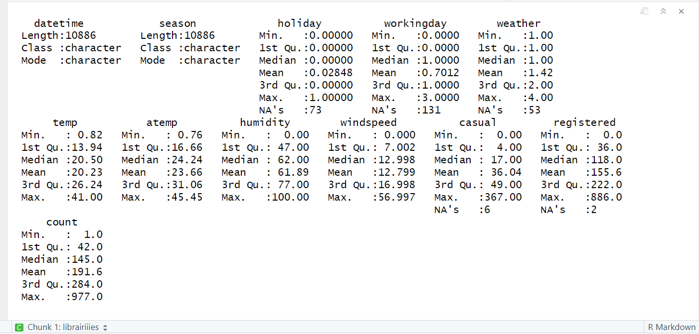
On remarque qu'il y a des valeurs manquantes dans les variables "holiday", "workingday", "weather", "casual" et "registered".
On trie les données selon la date, puis on transforme les dates de chaines de caractère au format date :
# tri selon la date
train <- as.data.frame(train[order(train[,1],decreasing=F), ])
# mettre la chaine de caractère en format date
train <- train %>%
mutate(datetime = as.POSIXct(datetime, format = "%Y-%m-%d %H:%M:%S"))
View(train)
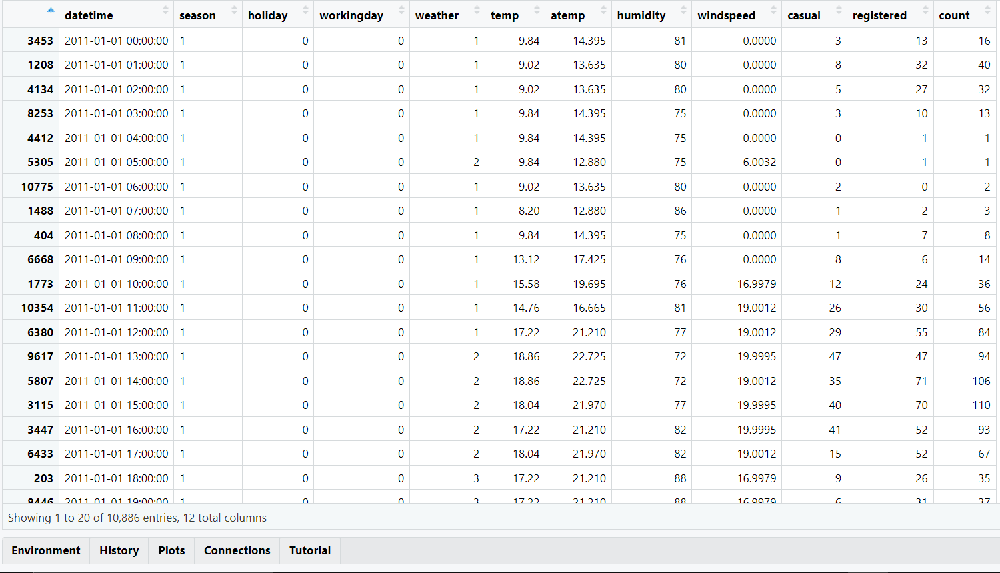
Mise à part les valeurs manquantes, on regardant de plus près les données,
on voit qu'il y en a qui sont mal codés , ainsi par exemple la variable
"season" prend 12 valeurs différentes au lieu des 4 possibles :
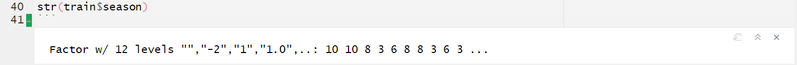
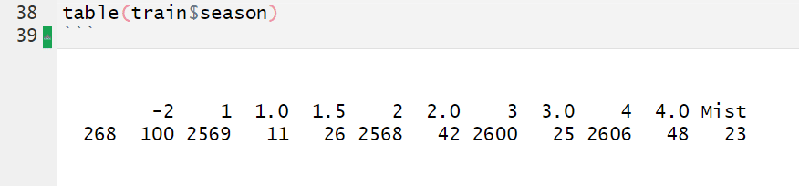
Pour mettre la variable "season" au propre, j'ai choisis de la déduire à partir de la date de l'observation, avec ce code, on compare
la date aux différentes saisons et on met à jour avec la bonne valeur qui correspond à la saison :
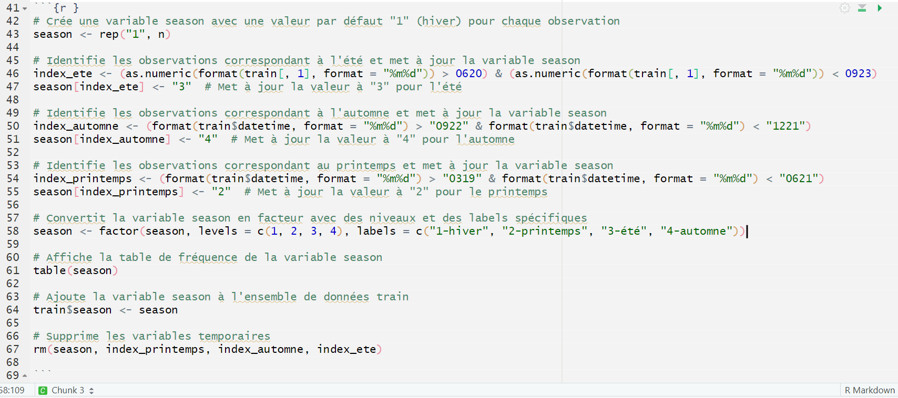
Maintenant "season" est bien propre sans valeurs insignifiantes ou non renseignées :
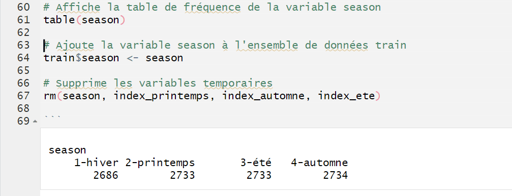
La variable workingday est censée être 0 pour un jour non travaillé et 1 pour un jour travaillé :
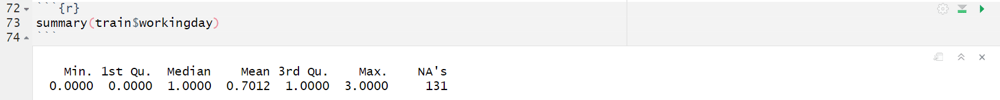
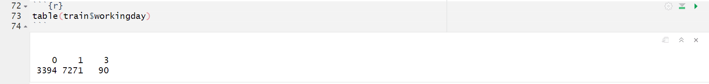
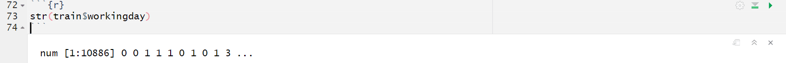
On a encore des valeurs insignifiantes et d'autres non renseignées, on va remettre ça au propre :
D'abord pour les NA's, on peut utiliser la fonction locf = "Last Observation Carried Forward", ce qui signifie qu'elle
remplace les valeurs manquantes par la dernière valeur non manquante observée. On peut l'utiliser dans ce cas puisque
les valeurs successives sont espacées d'une heure, qui appartiennent au même jour avec une grande probabilité.
Généralement cela peut être utile dans des données temporelles telles que des séries temporelles d'observations quotidiennes.
Pour les valeurs 3 anormalement présentes, de même on les remplace par la valeur précédente, sauf qu'il ne y a pas de fonction pour ça, on la code nous-même :
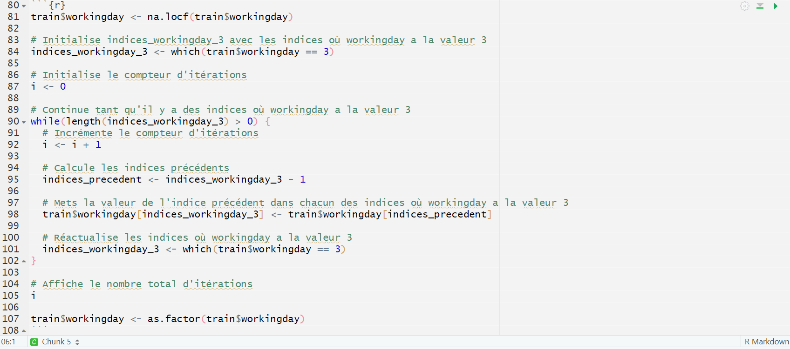
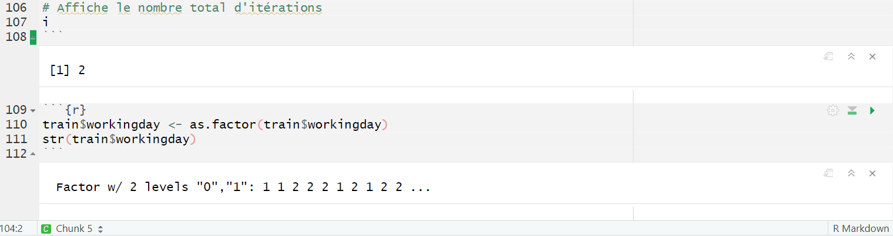
Les deux dernières variables 'weather' et 'holiday' sont faciles à traiter, une seule ligne chacune et c'est reglé :
Weather :
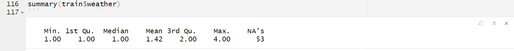
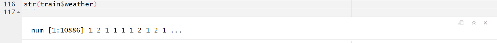
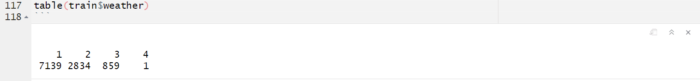
Après traitement :
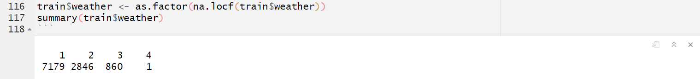
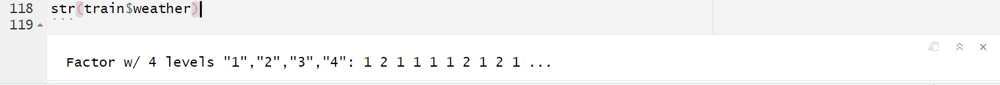
holiday :
Avant :
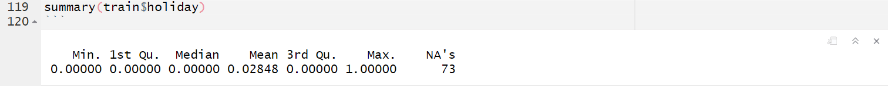
Après :
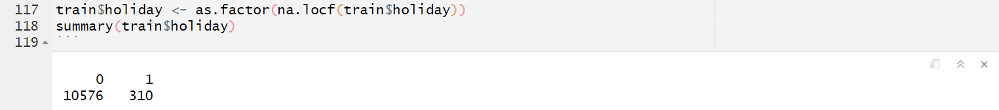
Exporter le dataframe vers un csv ou xlsx :
library(writexl)
write_xlsx(train, "C:/Users/iss/Desktop/iss3110/analyse exploratoire/mon_fichier.xlsx")
write.csv(train, "C:/Users/iss/Desktop/iss3110/analyse exploratoire/mon_fichier.csv")
Un premier graphe des données avec ggplot2 :
p <- ggplot(train, aes(x=datetime ,y=count,col=season))
p <- p + geom_point() +
xlab("dates") +
ylab("Ventes par heure") +
labs(col='Ventes moyennes par saison')
p
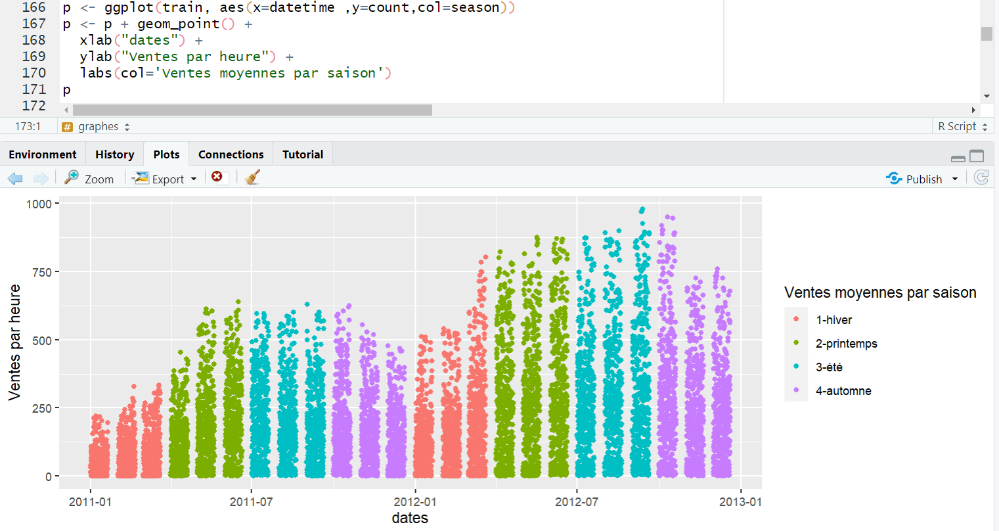
A première vu on voit un peu l'effet de la saison sur les ventes, et qu'il y a
une amélioration sur la période d'un an,
mais le graphe reste illisible à cause du nombre important des données prises toutes les heures
Maintenant on va agréger les données pour plus de visibilité, et pour ressortir l'effet des abonnés et non abonnés
# Agréger les ventes par mois pour registered, casual et le total
monthly_sales <- train %>%
group_by(month = floor_date(datetime, "month")) %>%
summarise(registered_sales = sum(registered),
casual_sales = sum(casual),
total_sales = sum(count))
# Transformer les données en format long
monthly_sales_long <- pivot_longer(monthly_sales, cols = c(registered_sales, casual_sales, total_sales),
names_to = "Type_de_vente", values_to = "Ventes")
# Créer un graphique en ligne pour l'évolution temporelle des ventes par mois
p <- ggplot(monthly_sales_long, aes(x = month, y = Ventes, color = Type_de_vente)) +
geom_line() +
xlab("Mois") +
ylab("Ventes par mois") +
labs(col='Type de Vente') +
scale_color_manual(values = c("registered_sales" = "blue", "casual_sales" = "green", "total_sales" = "red"),
labels = c("registered_sales" = "Abonnés", "casual_sales" = "Non abonnés", "total_sales" = "Total")) +
theme_minimal()
print(p)
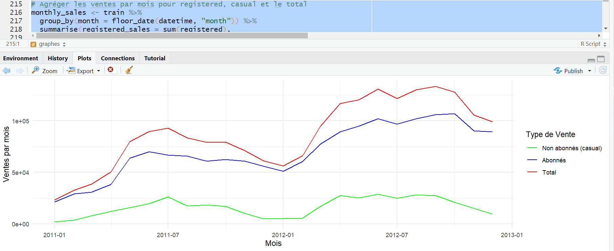
On voit que la grande partie des ventes vient des abonnés, il faut les fidéliser et les bien garder,
et s'il y a une campagne publicitaire à faire, c'est pendant l'été là où il y a un potentiel de nouveaux clients non abonnés
#### Agréger les ventes par condition météo ####
weather_labels <- c("1" = "Dégagé à nuageux", "2" = "Brouillard", "3" = "Légère pluie ou neige", "4" = "Fortes averses ou neige")
# Agréger les ventes par condition météo
sales_by_weather <- train %>%
group_by(weather) %>%
summarise(total_sales = sum(count),
casual_sales = sum(casual),
registered_sales = sum(registered))
# Mettre en forme les données en format long
sales_by_weather_long <- sales_by_weather %>%
tidyr::gather(key = "Type_de_vente", value = "Ventes", -weather)
# Créer un graphique en barres empilées
p <- ggplot(sales_by_weather_long, aes(x = factor(weather), y = Ventes, fill = Type_de_vente)) +
geom_bar(stat = "identity", position = "stack") +
xlab("Conditions Météo") +
ylab("Ventes") +
scale_fill_manual(values = c("total_sales" = "blue", "casual_sales" = "green", "registered_sales" = "red"),
name = "Type de Vente") +
theme_minimal() +
scale_x_discrete(labels = weather_labels)
# Afficher le graphique
print(p)
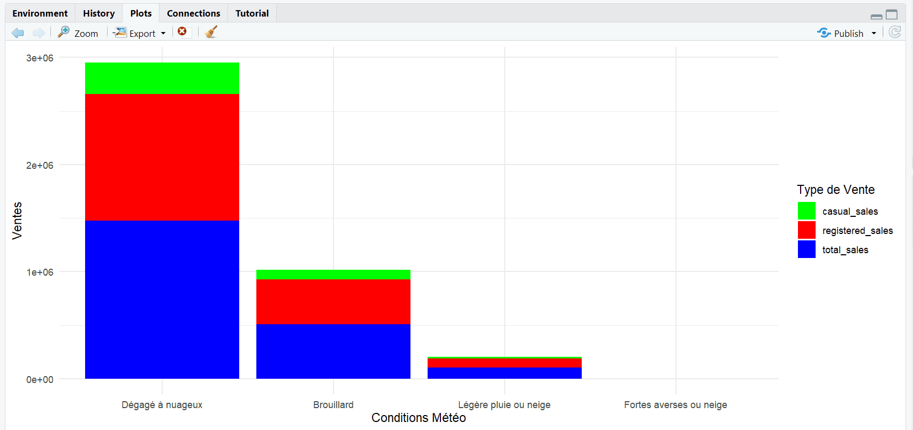
On pourrait vite tirer une corrélation mais non ça vient essentiellement du nombre de jour dans l'année où il fait
le temps 1 et quasiment aucun jour où il a neigé, c'est donc normal d'avoir cet aspect de forte corrélation
Ce qui ressort c'est seulement l'importance des abonnés et leur contribution dans le total de ventes
#### raphique en ligne pour montrer comment les ventes totales varient tout au long de la journée.####
# Agréger les ventes par heure
sales_by_hour <- train %>%
group_by(hour = hour(datetime)) %>%
summarise(total_sales = sum(count))
# Créer un graphique en ligne
p <- ggplot(sales_by_hour, aes(x = hour, y = total_sales)) +
geom_line() +
xlab("Heure") +
ylab("Ventes Totales par Heure") +
theme_minimal()
# Afficher le graphique
print(p)
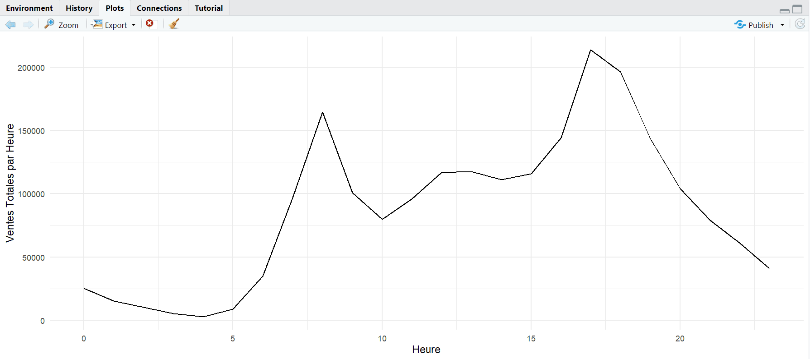
On voit 2 pics de ventes un le matin vers 8h et l'autre le soir vers 17h
#### Analyse de l'impact du jour de la semaine :####
# Agréger les ventes par jour de la semaine
sales_by_weekday <- train %>%
group_by(weekday = wday(datetime, label = TRUE, week_start = 1)) %>%
summarise(total_sales = sum(count),
casual_sales = sum(casual),
registered_sales = sum(registered))
# Mettre en forme les données en format long
sales_by_weekday_long <- sales_by_weekday %>%
tidyr::gather(key = "Type_de_vente", value = "Ventes", -weekday)
# Créer un graphique en ligne
p <- ggplot(sales_by_weekday_long, aes(x = factor(weekday, levels = c("lun\\.", "mar\\.", "mer\\.", "jeu\\.", "ven\\.", "sam\\.", "dim\\.")), y = Ventes, fill = Type_de_vente)) +
geom_bar(stat = "identity", position = "stack") +
xlab("Jour de la Semaine") +
ylab("Ventes par Jour") +
labs(fill = 'Type de Vente') +
theme_minimal()
print(p)
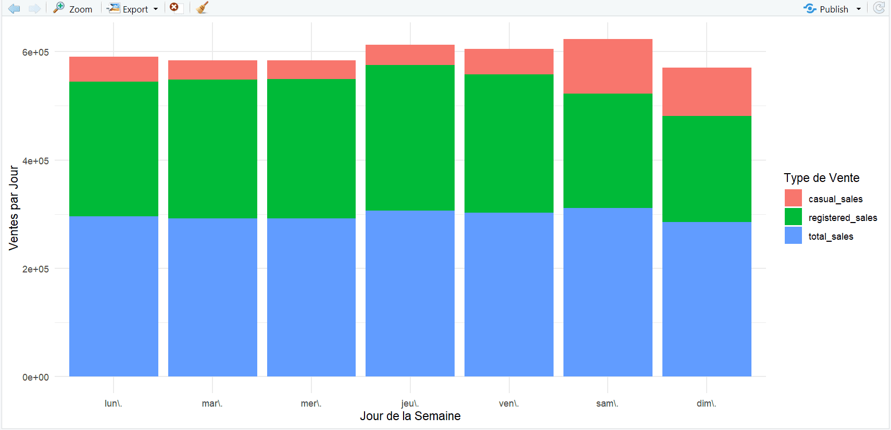
On a décelé un caractère très important : les ventes occasionnelles sont très importantes le samedi et le dimanche,
elles représentent environ 1/3 des ventes totales, s'il y a une stratégie de promotion pour fidéliser, il serait judicieux de
l'appliquer pendant le weekend.
On passe sur Power BI pour essayer de construire un tableau de bord intéressant :
En cours (le 24/10/2023)
Un exemple de tableau de bord avec Power BI :
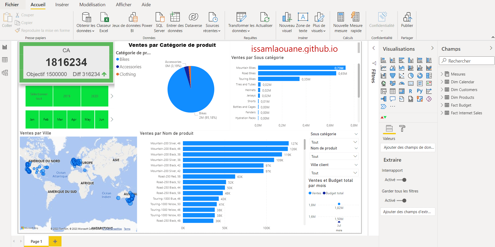